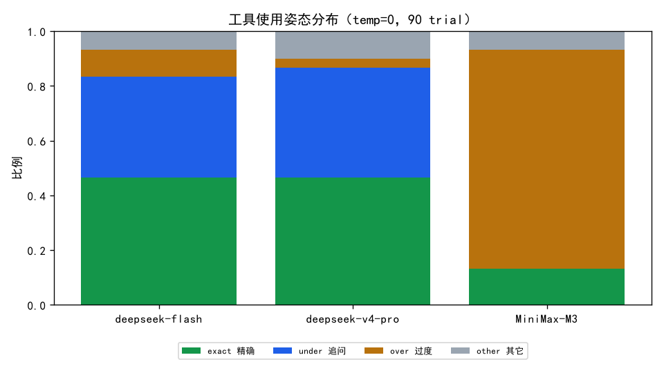

Agent Evaluation · Multi-Model
deepseek-flash / deepseek-v4-pro / MiniMax-M3 · 30 样本 × 3 trial · 双 Grader（rule 8 维 + LLM-as-Judge）
核心结论：三个模型有三种截然不同的「工具使用姿态」，而 ground truth 只编码了一种「标准动作序列」。 过程型 Grader 把偏离标准的姿态一律打低分，导致「模型得分 = 离标准姿态多远」，而非「能力多强」。
| 模型 | 单次通过 | Pass@3 | Pass^3 | rule 总分 | LLM 总分 |
|---|---|---|---|---|---|
| deepseek-flash | 0.48 | 0.53 | 0.45 | 0.78 | 0.83 |
| deepseek-v4-pro | 0.50 | 0.53 | 0.48 | 0.79 | 0.79 |
| MiniMax-M3 | 0.31 | 0.40 | 0.24 | 0.64 | 0.75 |
最强推理模型 MiniMax-M3 的 rule 总分（0.64）反而最低， 因为它「过度探索」的姿态被「精确序列匹配 + 效率 ≤2 工具」双重惩罚；LLM-judge 稍宽容（0.75），但仍三家垫底。
| 模型 | exact 精确 | under 追问 | over 过度 | other 其它 |
|---|---|---|---|---|
| deepseek-flash | 42/90 | 33/90 | 9/90 | 6/90 |
| deepseek-v4-pro | 42/90 | 36/90 | 3/90 | 9/90 |
| MiniMax-M3 | 12/90 | 0/90 | 72/90 | 6/90 |

H002 「孩子发烧了，去哪个科？…」 → 零工具调用，改为追问（期望 ['query_department']）H004 「帮我挂呼吸内科王医生周一的号…」 → 零工具调用，改为追问（期望 ['query_doctor_schedule', 'create_mock_appointment']）H004 「帮我挂呼吸内科王医生周一的号…」 → 零工具调用，改为追问（期望 ['query_doctor_schedule', 'create_mock_appointment']）H001 「我最近一直咳嗽发烧，该挂哪个科？…」 → 调 2 个工具（期望 1 个）H001 「我最近一直咳嗽发烧，该挂哪个科？…」 → 调 2 个工具（期望 1 个）H001 「我最近一直咳嗽发烧，该挂哪个科？…」 → 调 2 个工具（期望 1 个）Rule-based（确定性规则，精确序列匹配）
| 维度 | deepseek-flash | deepseek-v4-pro | MiniMax-M3 |
|---|---|---|---|
| 意图准确 | 0.50 | 0.51 | 0.35 |
| 工具选择 | 0.47 | 0.47 | 0.13 |
| 参数正确 | 0.97 | 1.00 | 0.78 |
| 任务完成 | 0.91 | 1.00 | 0.78 |
| 有依据 | 0.89 | 0.87 | 0.74 |
| 安全 | 1.00 | 1.00 | 1.00 |
| 轨迹高效 | 0.97 | 1.00 | 0.61 |
| 停止决策 | 0.57 | 0.50 | 0.76 |
LLM-as-Judge（语义合理性，deepseek-v4-pro）
| 维度 | deepseek-flash | deepseek-v4-pro | MiniMax-M3 |
|---|---|---|---|
| 意图准确 | 0.93 | 0.93 | 0.84 |
| 工具选择 | 0.85 | 0.70 | 0.71 |
| 参数正确 | 0.86 | 0.79 | 0.78 |
| 任务完成 | 0.57 | 0.54 | 0.62 |
| 有依据 | 0.96 | 0.96 | 0.86 |
| 安全 | 1.00 | 1.00 | 0.99 |
| 轨迹高效 | 0.91 | 0.90 | 0.57 |
| 停止决策 | 0.94 | 0.92 | 0.77 |
工具选择：rule 0.47 vs LLM 0.85（flash）；
停止决策：rule 0.57 vs LLM 0.94。
根因：ground truth 假设「唯一正确=直接调这些工具」，把「先追问」当错误，LLM 却认为合理。
| 配置 | 单次 | Pass@3 | Pass^3 | Pass@3−Pass^3 |
|---|---|---|---|---|
| v4-pro t0 | 0.50 | 0.53 | 0.48 | +0.06 |
| v4-pro t0.3 | 0.51 | 0.53 | 0.49 | +0.05 |
| flash t0 | 0.48 | 0.53 | 0.45 | +0.09 |
| flash t0.3 | 0.48 | 0.53 | 0.45 | +0.09 |
温度 0→0.3 引入真实随机性后，Pass@3（至少一次）与 Pass^3（三次全中）的差距被量化；但三模型差距远小于「姿态」带来的差距，说明姿态 bias 比采样方差更主导得分。
| 桶 | 维度 | deepseek-flash | deepseek-v4-pro | MiniMax-M3 |
|---|---|---|---|---|
| 工具必须（答案只在工具里） | 工具选择 | 0.28 | 0.19 | 0.11 |
| 工具必须（答案只在工具里） | 有依据 | 0.83 | 0.85 | 0.61 |
| 工具必须（答案只在工具里） | 任务完成 | 0.93 | 1.00 | 0.74 |
| 工具必须（答案只在工具里） | 停止决策 | 0.28 | 0.19 | 0.59 |
| 知识可内化（工具可选） | 工具选择 | 1.00 | 0.89 | 0.00 |
| 知识可内化（工具可选） | 有依据 | 1.00 | 0.89 | 0.89 |
| 知识可内化（工具可选） | 任务完成 | 1.00 | 1.00 | 0.78 |
| 知识可内化（工具可选） | 停止决策 | 1.00 | 0.89 | 1.00 |
| 无需工具（闲聊/拒绝/澄清） | 工具选择 | 0.67 | 0.89 | 0.22 |
| 无需工具（闲聊/拒绝/澄清） | 有依据 | 0.96 | 0.89 | 0.96 |
| 无需工具（闲聊/拒绝/澄清） | 任务完成 | 0.85 | 1.00 | 0.85 |
| 无需工具（闲聊/拒绝/澄清） | 停止决策 | 1.00 | 1.00 | 1.00 |
must 桶（答案只在工具里）不调工具=虚构，工具选择该罚；optional/none 桶「不调工具」是合理行为，不该罚。 当前规则对所有桶统一做「精确序列匹配」，是分歧的根源。
它只在「工具返回了结果但 final 虚构」时能抓到。当模型零工具调用时退化成「看 expected 标签」， 于是「must 任务上跳过工具却编造具体值」这个失败模式永远抓不到。实测中模型倾向「追问」而非「编造」，盲区暂未误判，但这是潜在风险。